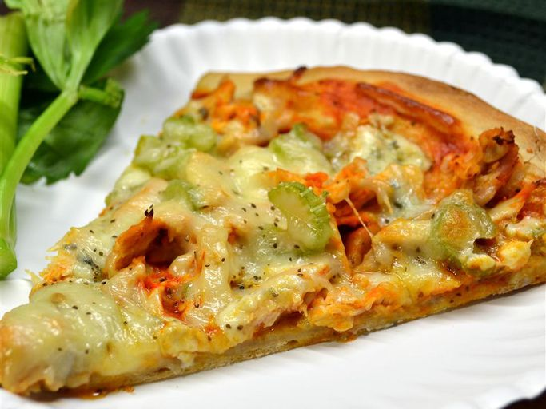

Ingredients
- 1 package prebaked pizza crust
- 1 cup diced cooked chicken breast
- 3 tablespoons Buffalo wing sauce
- 1/2 cup Buffalo wing sauce
- 1 package crumbled blue cheese
- 1 stalk celery, thinly sliced
- 1 cup shredded mozzarella cheese
Instructions
- Preheat the oven to 475 degrees F. Line a baking sheet with aluminium foil.
- Place pizza crust on the prepared baking sheet.
- Mix chicken and 3 tabelspoons wing sauce together in a bowl until evenly coated.
- Spread 1/2 cup wing sauce on the pizza crust; top with blue cheese, chicken mixture and celery. Cover pizza with mozzarella cheese.
- Bake in preheated oven until pizza is cooking through and cheese is bubbling, about 12 minutes.
Cool pizza about 5 minutes before cutting into squares.
